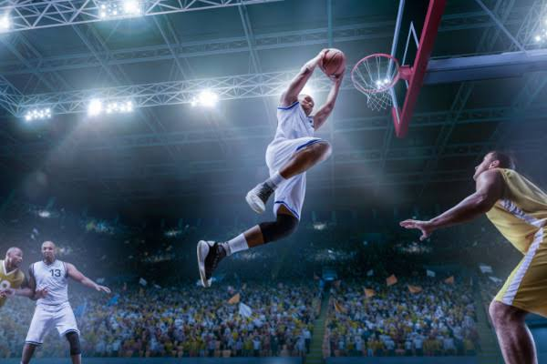
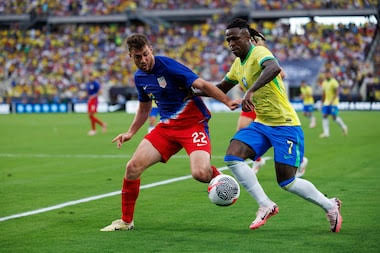
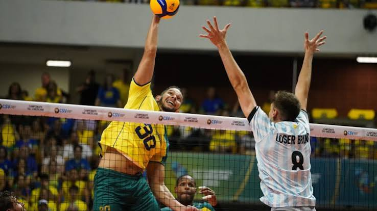

Basquete universitário movimenta as Quadras
O novo Basquete universitário está com jogos eletrizantes nesta temporada.

O novo Basquete universitário está com jogos eletrizantes nesta temporada.

Times se enfrentam em fase de grupo em copa do mundo

Times se enfretam pela liderança da superliga
O futebol é um dos esportes mais populares do mundo. Ele é praticado por pessoas de diferentes idades e países. O objetivo principal é marcar mais gols que o time adversário. Cada equipe possui onze jogadores em campo. Além de diversão, o futebol também incentiva o trabalho em equipe. Os jogadores precisam de disciplina, dedicação e bastante treinamento. As partidas podem reunir milhares de torcedores nos estádios. Grandes campeonatos, como a Copa do Mundo, atraem a atenção mundial. O futebol também pode criar amizades e aproximar diferentes culturas. Por isso, ele é considerado uma paixão para muitas pessoas.
O basquete é um esporte muito popular em diversos países. Ele é jogado por duas equipes, com cinco jogadores em cada uma. O objetivo principal é marcar pontos ao acertar a bola na cesta. Os jogadores precisam ter agilidade, velocidade e boa coordenação. O trabalho em equipe é muito importante durante as partidas. O esporte exige bastante treinamento e dedicação dos atletas. As partidas são divididas em períodos e podem ser bastante disputadas. A NBA é uma das principais ligas de basquete do mundo. Além de ser divertido, o basquete ajuda a desenvolver várias habilidades físicas. Por isso, é um esporte praticado e admirado por milhões de pessoas.
O vôlei é um esporte muito popular no Brasil e no mundo. Ele é praticado por duas equipes, geralmente com seis jogadores cada. O objetivo é fazer a bola tocar no chão do lado adversário. Os jogadores podem usar as mãos e os braços para passar a bola. O trabalho em equipe é essencial durante uma partida. O vôlei exige agilidade, força, concentração e boa comunicação. As equipes precisam organizar bem seus ataques e defesas. O Brasil é conhecido por ter grandes jogadores e equipes de vôlei. O esporte pode ser praticado em quadras ou na areia. Por isso, o vôlei é uma ótima opção para diversão e competição.